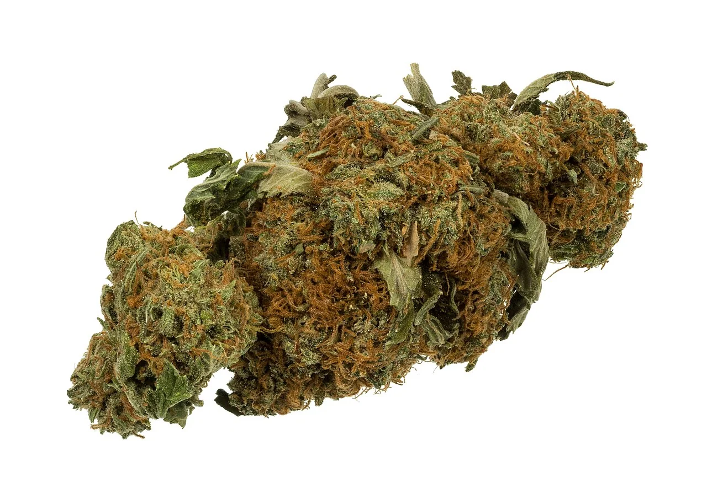
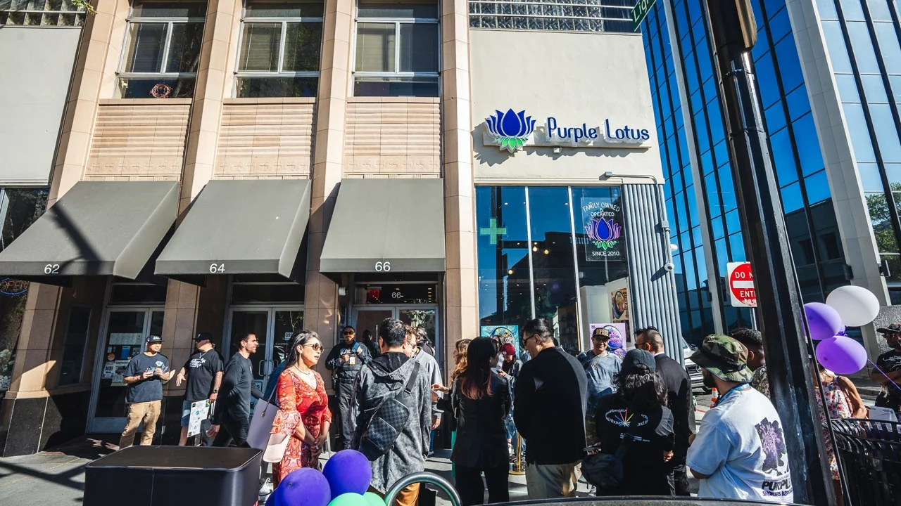
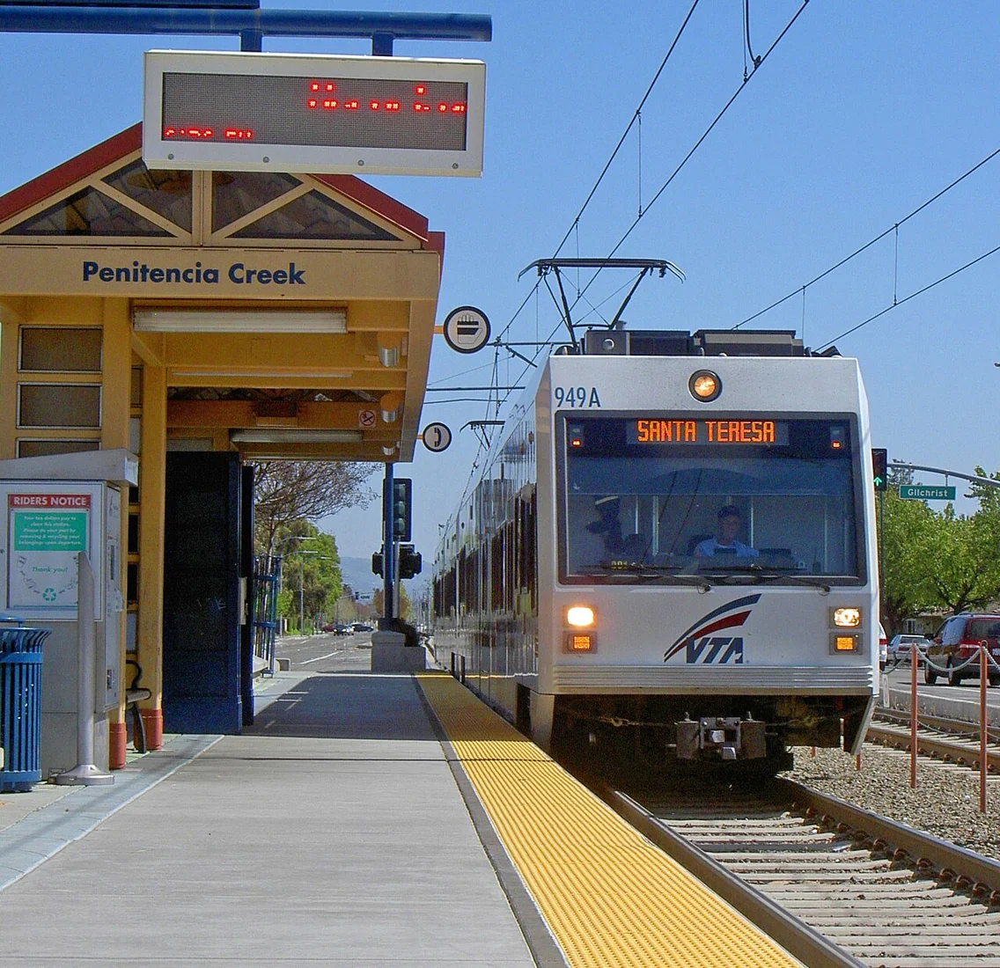
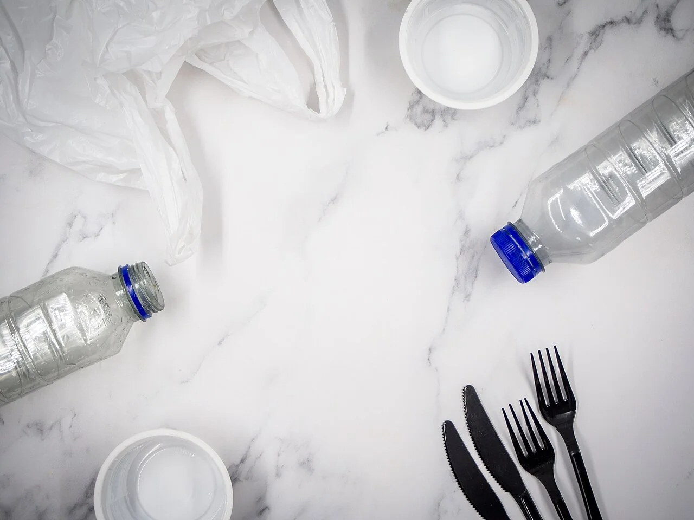
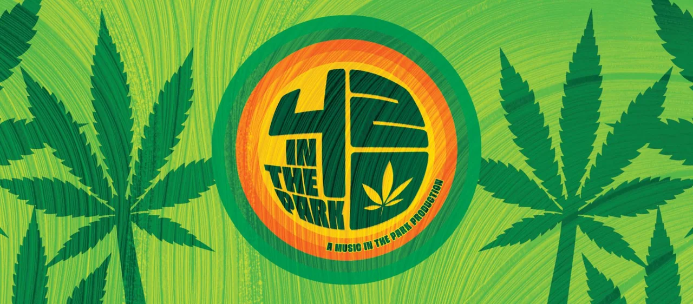
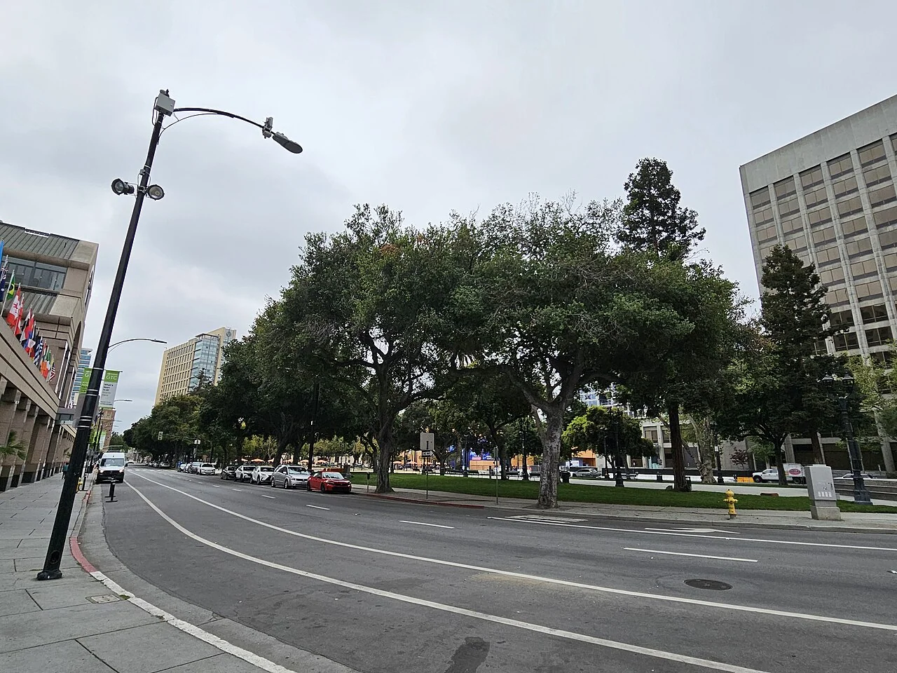

Culture & community / Local guide
Cannabis Journalism Ethics for a Local Shopper Paper
Deal calendars and enforcement posts can live in one paper if the ethics are explicit: verify, disclose, refuse fake balance, and protect readers from harm.
City life & consumer policy / Local guide
A lower black-market number is not a lab result. Taxes, testing, and unknown pesticides explain much of the gap, and SJPD cases show why source still matters.
Read the story ↗
Explore the cannabis brand atlas, compare formats, and build your own shortlist.
Open the brand atlas ↗FROM THE JOURNAL
Culture & community / Local guide
Deal calendars and enforcement posts can live in one paper if the ethics are explicit: verify, disclose, refuse fake balance, and protect readers from harm.
Culture & community / Local guide
San Jose’s bilingual everyday life should extend to cannabis retail. You can ask for Spanish help, plain explanations, and label clarity without apology.
City life & consumer policy / News & features
SJPD’s Sept. 16 seizure paired illegal gaming machines with about 13 pounds of marijuana. For licensed shoppers, the lesson is supply-chain clarity, not panic.
Culture & community / Local guide
South Bay congregations span abstinence teachings, harm-reduction pastoral care, and quiet don’t-ask cultures. Shoppers deserve nuance, not caricature.
City life & consumer policy / Local guide
California legalized adult use; many employers still test. Tech, warehouse, healthcare, and federal-contract workers need clear-eyed habits, not forum myths.

Music & local events / News & features
Purple Lotus’s downtown NFL Block Party put food, a DJ, and brand booths at 66 W Santa Clara St. for Sept. 12. Read the ticket math and public-consumption limits before you treat it like a free sidewalk sale.
City life & consumer policy / Local guide
Where San Jose allows cannabis storefronts shapes the parking hunt. Industrial edges trade walkability for lots; downtown trades lots for meters, garages, and patience.

City life & consumer policy / Local guide
Transit-friendly shopping is possible when products stay sealed, odor-controlled, and unconsumed on platforms and trains.
Culture & community / Local guide
Visitors can walk plazas, museums, and transit, and still make a lawful cannabis purchase, if they time ID checks, sealed transport, and private consumption correctly.

Culture & community / Local guide
Child-resistant tubes and multilayer pouches protect kids, and fill trash cans. South Bay shoppers can reduce waste without pretending regulation is optional.
City life & consumer policy / Local guide
Polished reels and DM menus are not city registration. A short checklist keeps South Bay adults on the lawful side of scarce storefronts.
City life & consumer policy / News & features
An Aug. 24 SJPD vehicle stop that bundled smoked cannabis, sales indicia, and illegally built firearms is a youth-and-safety story licensed shoppers can use without the lecture.
Culture & community / Local guide
Respect is a service standard, not a niche marketing slogan. Shoppers can spot it without needing a guided tour of any one store.
Music & local events / Local guide
April 2026 put a ticketed 420 weekend on the plaza calendar. The lasting change is cultural visibility, not a rewrite of public-use law.

Music & local events / Local guide
Plaza de César Chávez is downtown’s living room. Cannabis culture may appear on festival posters, public consumption still generally may not.
Music & local events / Local guide
Downtown shows reward timing. Buy legal earlier, keep product sealed, and do not treat plazas or sidewalks as green rooms.
Music & local events / Local guide
BBQ lines and DJ sets borrowed festival grammar for adult retail weekends. The food is the point outdoors, the cannabis waits for private property.
Culture & community / Local guide
Student discounts may exist as retailer promotions, age 21 adult-use ID rules do not bend for campus proximity.

City life & consumer policy / Local guide
State-legal retail is open to adult veterans, VA benefits and federal employment rules are a different conversation.
City life & consumer policy / Local guide
California’s Dennis Peron and Brownie Mary Act lets licensed retailers donate tested medicinal cannabis to qualifying patients, not recreational bargain hunters.
City life & consumer policy / Local guide
A legal San Jose receipt does not rewrite HR policies, firearm forms, or federal banking friction.
City life & consumer policy / Local guide
Medical scheduling headlines are not a green light for every adult-use jar, and they do not replace SJPD registration.

City life & consumer policy / Local guide
California’s adult-use law did not turn downtown plazas into smoking lounges, public places remain off-limits.
City life & consumer policy / Local guide
County commercial bans push many South Bay buyers into San Jose’s licensed storefronts, and city tax reality.
City life & consumer policy / Local guide
Voters authorized a local gross-receipts cannabis tax years before adult-use retail, and shoppers still feel it in shelf prices.
City life & consumer policy / Local guide
The late-2025 code update did not reopen retail applications, but it did rewrite registration timing and delivery math.
City life & consumer policy / Local guide
Closed retail applications, a narrow equity on-ramp, and a roster near twenty registered businesses explain the empty corners.
City life & consumer policy / Local guide
A state cannabis license and a San Jose Notice of Completed Registration are related, but not interchangeable.
City life & consumer policy / Local guide
The city’s public registry, not a deal flyer, is the map of who may lawfully sell or deliver cannabis in San Jose.